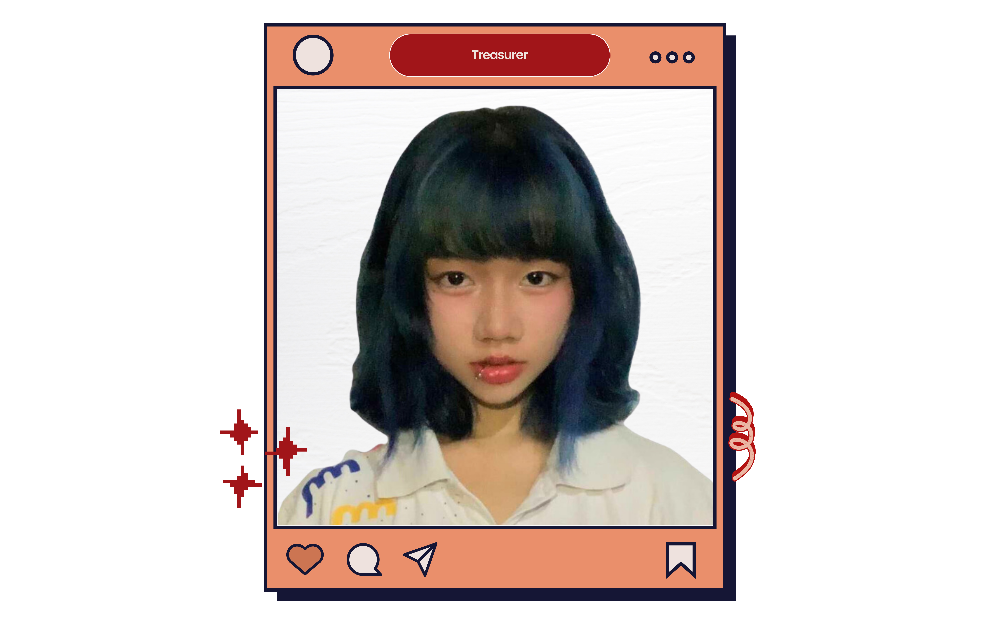

2024 - 2025
About Me

Riza Acma
Treasurer
My love and passion for students like me are persistent as an aspiring student leader. Together, let's grow, learn, and collaborate to create a better, more welcoming atmosphere.
- Overall S.Y 2022-2023 With Honors (Grade 10)
- Best in Filipino Overall Grade 10 S.Y 2022-2023 (Grade 10)
- With high honors (1st and 2nd sem)
- Yes- O former member (Organization that promotes love and concern for the environment S.Y 2019-2020)
- Former SSG Secretary (S.Y 2019-2020)
- Pandibisyong timpalak sa tagisan ng talento 3rd Place (S.y 2019-2020)
- DSPC qualifier, Fipino Column Writing Category (S.Y 2023-2024)
- DSPC qualifier, English Colum Writing Category (S.Y 2022-2023)
